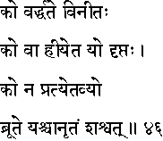
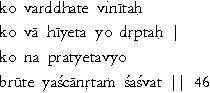

|

|
Verse 46 - Meaning:
Q:Who (ko) attains the highest levels in life ? (vardhate)
A:That one who is endowed with true humility. (viniitah).
Q:Who (ko) is subject to downfall ? (vaa hiiyeta)
A:The proud and arrogant ones. (yo drptah)
Q:Who (ko) deserves to be dis-trusted ? (na-pratyetavyo)
A:That one (yas-ca) who is a habitual liar. (anrtam saasvat).
|